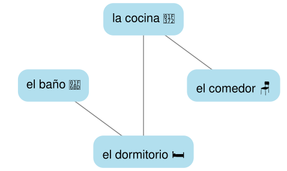
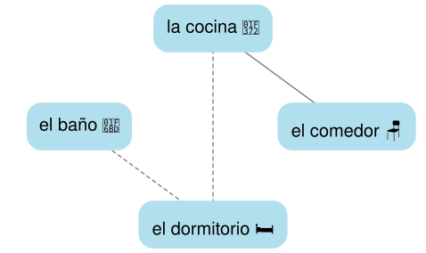
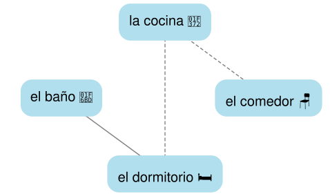

📸 Retrato del sospechoso

mystery-o-matic es un sitio web que ofrece un misterio de asesinato gratuito para resolver a diario. Fue creado por dos entusiastas que comparten un profundo amor por el misterio y un fuerte compromiso con ofrecer una experiencia única a otros detectives.
A diferencia de los juegos típicos, los misterios diarios de este sitio web requieren pensamiento deductivo, pero están diseñados para reflejar la imprevisibilidad de los escenarios de la vida real, haciéndolos más desafiantes y variados. En lugar de seguir una ruta de deducción predefinida, cada misterio diario se sintetiza a través de la exploración aleatoria, ofreciendo un giro refrescante en comparación con los juegos tradicionales de lógica deductiva.
Los creadores se inspiraron en juegos populares como Cluedo (obviamente), "Infinite Detective" de Squidi y Murdle para dar forma al cautivador mundo de mystery-o-matic. El código que produce automáticamente los enigmas diarios, así como el resto del sitio web, ¡es de código abierto! Las imágenes de los sospechosos son de Freepik: [1], [2] [3] [4] [5] [6] [7]
El sitio web aún está en beta, por lo tanto, las reglas, la interfaz y el diseño están sujetos a cambios. No dudes en enviarnos tus comentarios aquí o a nuestro subreddit.
Si disfrutas del sitio web y deseas patrocinar nuestro trabajo, puedes donar criptomonedas a: 0xd0FD96CD73762Fd081cf2269D79F359e4314629b
Esta sección muestra los diferentes niveles de puntuación que puedes obtener después de resolver un
misterio diario.
mystery-o-matic trae de vuelta el venerable sleuth-o-meter™ de los misterios de Laura Bow para llevar un registro de tu puntaje:

Cada pista revelada disminuirá tu puntaje. Ten en cuenta que el sitio web aún está en beta, por lo que este sistema de puntuación, la interfaz o el diseño están sujetos a cambios. No dudes en enviarnos tus comentarios aquí o a nuestro subreddit.
Esta sección ofrece consejos y trucos útiles para resolver el misterio diario.

En este tutorial, Alice ha sido asesinada antes de las 9:30 en la mansión, y su cuerpo fue encontrado en la cocina. Usaremos el Tablero de Cronología para reconstruir este crimen. Comencemos con algunos hechos básicos que sabemos con certeza:

La lista de pistas iniciales describe dónde estaba cada personaje a las 9:30, el final de la cronología. Es tu trabajo deducir, usando las declaraciones de los sospechosos y otras pistas, quién es el asesino, qué arma se usó y cuándo ocurrió el crimen. Podemos marcar la cronología con tres símbolos simples: ✓ significa que alguien estuvo allí, ✗ significa que no, y ? significa que no estamos seguros.
En la parte inferior del tablero de cronología se encuentra la sección de armas, que muestra dónde se encontraba cada arma disponible. Por ejemplo, el asesino tomó el arma homicida de una de las siguientes ubicaciones:
¡Aquí es donde se pone divertido! Nuestros sospechosos pueden moverse entre habitaciones cada 15 minutos (son sospechosamente puntuales), siguiendo el diseño de la ubicación. Solo pueden moverse a habitaciones directamente conectadas durante cada intervalo de 15 minutos, ¡no se permiten atajos! Piénsalo como moverte en un tablero de ajedrez: tienes que pasar por las casillas una por una. Por ejemplo, si Carol quiere ir del comedor (🪑) al dormitorio (🛏️), debe:
☞ Bob: "Vi a Alice cuando llegué al dormitorio (🛏️) a las 8:15"
¿Qué podemos deducir? Bastante, en realidad:
Haz clic en cada deducción para tachar el texto, lo que te ayudará a concentrarte en otras
pistas (¡pruébalo con las pistas que se muestran arriba junto a la lupa!).
Usando estas deducciones podemos comenzar a completar el tablero de cronología:
En el momento en que terminamos de agregar esto en el horario, ¡comienzan a surgir otras
deducciones! Como nuestros sospechosos no han dominado el arte de estar en dos lugares a la vez,
también podemos averiguar dónde no estaban:
Agreguemos las deducciones que faltan:
¿Pero dónde estaba Bob a las 8:00? Aquí es donde nuestro diseño de la habitación es útil:
En este mapa, el dormitorio tiene líneas continuas que lo conectan con la cocina y el baño. Estas líneas continuas representan conexiones directas, habitaciones entre las que los personajes pueden moverse en un intervalo de 15 minutos. La línea de puntos hacia el comedor muestra una conexión indirecta: los personajes deben pasar primero por otra habitación para llegar allí. Como el dormitorio se conecta tanto con la cocina como con el baño, Bob podría haber venido de cualquiera de los dos. Pero aquí hay una deducción sólida: ¡Bob no podría haber estado en el comedor a las 8:00 porque no se conecta con el dormitorio!
Usando esta información, podemos agregar otra deducción en el tablero de cronología:
Otros tipos de pistas describen cuándo los sospechosos pasan algún tiempo. Por ejemplo:
☞ Carol: "Estuve en el comedor (🪑) de 8:00 a 8:45"
Esto nos dice:
¿Dónde estaba Carol a las 9:00? Volvamos al mapa de la mansión para averiguarlo:

Completemos el tablero de cronología con todas estas deducciones:
Aquí hay otro tipo de pista jugosa:
☞ Bob: "No vi a nadie cuando llegué al baño (🚽) a las 9:00"
Vamos a desglosarlo:
¿Qué más podemos sacar de esta pista? Echemos otro vistazo al gráfico de ubicación:

No solo esta pista ubica a Bob en el baño a las 9:00, sino que podemos retroceder: ¡debe haber estado en el dormitorio a las 8:45 ya que es la única forma de llegar al baño! En otras palabras:
Es hora de agregar nuestras nuevas y brillantes deducciones al tablero de cronología:
Finalmente, a veces obtenemos pistas vagas de los sospechosos:
☞ Carol: "Escuché a alguien lavando los platos a las 8:45"
Esta pista nos dice que alguien estaba en la cocina. Espera un momento, ¿puedes lavar los platos en el baño? No, absolutamente ridículo (te estoy mirando a ti, The Sims™). Repasemos lo que hemos deducido hasta ahora:
Puede ser tentador tratar de adivinar dónde estaba Carol, pero esto no es posible. Los personajes
a veces pueden oír o ver a alguien en otras habitaciones, pero su ubicación no se puede inferir de
este tipo de pista.
Sin embargo, lo que podemos deducir usando nuestras observaciones anteriores es quién estaba en la
cocina. Claramente, no era Carol (¡en realidad estaba en otro lugar a las 8:45!). Además, sabemos
que Bob estaba en el dormitorio, lo que significa que Alice estaba en la cocina a las 8:45.
Nuestro primer intento de deducir hechos no fue muy bueno, así que repasemos nuestra deducción anterior y refinémosla:
De vuelta al tablero de cronología...
☞ Se escuchó un grito espeluznante de la víctima entre las 8:45 y las 9:00
Como nuestros sospechosos se mueven cada 15 minutos como un reloj, el asesinato tuvo que ocurrir a
las 8:45 o a las 9:00. Sin embargo, ya sabemos que Alice estaba viva a las 8:45 (y lavando los
platos felizmente). Así que la única opción aquí es que el asesinato ocurrió a las 9:00. Recuerda
que una vez que el asesino ataca, el cuerpo de la víctima nunca se mueve, por lo que podemos
completar fácilmente la cronología de Alice hasta las 9:30.
☞ La inspección del cuerpo no revela signos de apuñalamiento
Para descartar un arma en particular, necesitamos saber qué tipo de herida producen. Simplemente haz clic en el tipo de herida descrito en la pista (por ejemplo, apuñalamiento) y verás una lista de posibles armas.
Armados con esta información, podemos descartar un arma en la parte inferior de la tabla del tablero de cronología, simplemente haciendo clic en el icono correspondiente del arma/ubicación: ✂️🍲
Es hora de juntar todo y resolver nuestro primer asesinato. Incluimos todas nuestras deducciones en el siguiente tablero de cronología de solo lectura:
Piensa un momento y luego haz clic para revelar cada solución:
¿Sabes qué es realmente inteligente de este enfoque? Aunque hemos reconstruido la mayor parte de la cronología, todavía hay algo de misterio sobre los movimientos de Alice, como dónde estaba a las 8:30. Y eso no es un descuido, ¡en realidad nos está mostrando algo importante! ¿Recuerdas esa nota anterior sobre cómo "reconstruir toda la cronología no es necesario para resolver el asesinato, y a menudo es imposible"? Bueno, estamos viendo ese principio en acción. Resolvimos el caso de manera concluyente (Carol lo hizo con el martillo a las 9:00) sin necesidad de rastrear cada lugar que Alice visitó. Es un ejemplo perfecto de cómo estos rompecabezas reflejan un trabajo de detective más realista.
¡Caso cerrado! ¿Listo para enfrentar el siguiente?
Eso no fue muy difícil, ¿verdad? Bueno, si quieres ser un súper detective 🕵️, necesitas aprender algunos consejos y trucos adicionales. Esta sección te ayudará a lidiar con casos más complicados (¡e interesantes!).
Hay una técnica poderosa para confirmar o eliminar rápidamente posibles armas homicidas, basada en esta pista crucial:
☞ El asesino estaba solo cuando recuperó el arma homicida.
Al combinar esta información con tus sospechas sobre el asesino y el momento del crimen, puedes hacer deducciones decisivas. Examinemos cómo funciona esto:
☞ Alice: "Estuve en el dormitorio de 8:00 a 8:30"
Suponiendo que Alice NO es la asesina y el crimen ocurrió después de las 8:30, entonces podemos llegar a la siguiente deducción:
Por el contrario, si Alice ES la asesina y el crimen ocurrió después de las 8:30, entonces necesitaremos verificar si estaba sola a las 8:00, 8:15 o 8:30 para deducir:
¡Usando esta técnica deductiva, podemos identificar rápidamente el arma utilizada y resolver el caso!
Antes de comenzar cada misterio, puedes decidir si el asesino puede mentir en sus declaraciones o no. Si estás preparado para un desafío, tendrás que considerar que cada declaración de los sospechosos puede ser una mentira.
¡Mentir durante una investigación criminal es un asunto serio! El asesino debe tener mucho cuidado ya que el resto de los sospechosos siempre dirán la verdad. En la práctica, solo proporcionarán una declaración falsa si de alguna manera ayuda a cubrir sus huellas durante el momento y el lugar del asesinato.
Identificar al asesino usando información no confiable suele ser más difícil ya que no sabemos si las declaraciones son verdaderas o no. No toda la esperanza está perdida, ya que el resto de los sospechosos siempre dirán la verdad. Detectar una mentira es fácil: debemos buscar una inconsistencia entre dos declaraciones. Veamos un ejemplo:
☞ Bob: "Estuve en la cocina de 9:00 a 10:00"
☞ Carol: "No vi a nadie cuando llegué a la cocina a las 9:30"
Esta contradicción te dice inmediatamente algo crucial, sabemos que exactamente una de las siguientes afirmaciones debe ser cierta:
Consejo profesional™: comienza asumiendo que todas las declaraciones son veraces. Cuando encuentres una contradicción, habrás identificado a un par de posibles asesinos.
Un grupo de amigos tropieza con una inquietante mansión abandonada. Ahora, confinados en sus
siniestras garras, se encuentran en una escalofriante serie de asesinatos. Cada día trae un nuevo
enigma, con uno de ellos como desafortunada víctima y el resto como sospechosos.
¡Prepárate para resolver un nuevo asesinato misterioso! Tu objetivo es averiguar quién lo hizo, cuándo sucedió y qué arma se utilizó.
$introLocationAyúdales a resolver este misterio revisando estas pistas iniciales:

¡Prepárate para resolver este rompecabezas! Recibirás pistas que poco a poco descubrirán la verdad detrás del asesinato. El rompecabezas diario se puede resolver en dos modos. En el modo fácil, todos dirán la verdad. Opcionalmente, el asesino a veces puede mentir si deseas un desafío más difícil.
Cada pista que leas afectará tu puntuación. Piensa cuidadosamente mientras buscas evidencias y cuestionas a los sospechosos para resolver el misterio. Cuando lo resuelvas, obtendrás un rango del maravilloso sleuth-o-meter™.
¿Estás listo para el desafío? ¡Empecemos a investigar!
Usa esta tabla para llevar un registro de los hechos, pistas y deducciones. Puedes consultar la sección cómo se juega si lo necesitas.
Elige si el asesino solo dice la verdad (más fácil) o si puede mentir (más difícil).
PISTA

Después de trabajar toda la noche recolectando evidencias y analizando pistas, es hora de resolver
este caso eligiendo al sospechoso, la hora del asesinato y el arma. Una advertencia: si seleccionas
la respuesta incorrecta, puedes intentarlo de nuevo, pero
El peso de la evidencia contra el acusado era inmenso, sin dejar lugar a dudas. El bucle está complacido.
¡Felicidades por resolver el caso! Has resuelto el asesinato misterioso de hoy con un rango sleuth-o-meter™ de
Vuelve mañana para otro desafío.
Te enfrentas a un rompecabezas desconcertante lleno de evidencia contradictoria. Está claro que la identidad del sospechoso, la hora del crimen, o incluso el arma involucrada podrían estar equivocados, sembrando dudas en la investigación.
El bucle está descontento y se reinicia abruptamente, dejándote sin pistas para el día. Puedes volver mañana para otro desafío.